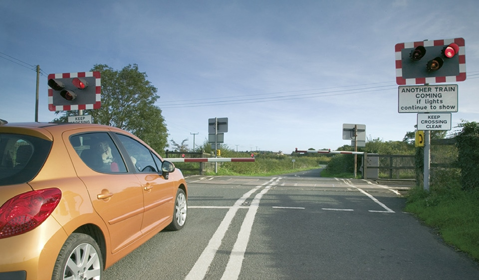

Road works, level crossings and tramways (288 to 307)
|
3. Level crossings (291 to 299)
4. Tramways (300 to 307) |
3. Level crossings (291 to 299)
291
A level crossing is where a road crosses a railway or tramway line. Approach and cross it with care. Never drive onto a crossing until the road is clear on the other side and do not get too close to the car in front. Never stop or park on, or near, a crossing.
Overhead electric lines
292
It is dangerous to touch overhead electric lines. You MUST obey the safe height warning road signs and you should not continue forward onto the railway if your vehicle touches any height barrier or bells. The clearance available is usually 5 metres (16 feet 6 inches) but may be lower.
Laws RTA 1988 sect 36, TSRGD 2002 reg 17(5)
293
Controlled Crossings. Most crossings have traffic light signals with a steady amber light, twin flashing red stop lights (download ‘Light signals controlling traffic’ and ‘Traffic signs’) and an audible alarm for pedestrians. They may have full, half or no barriers.
A level crossing is where a road crosses a railway or tramway line. Approach and cross it with care. Never drive onto a crossing until the road is clear on the other side and do not get too close to the car in front. Never stop or park on, or near, a crossing.
Overhead electric lines
292
It is dangerous to touch overhead electric lines. You MUST obey the safe height warning road signs and you should not continue forward onto the railway if your vehicle touches any height barrier or bells. The clearance available is usually 5 metres (16 feet 6 inches) but may be lower.
Laws RTA 1988 sect 36, TSRGD 2002 reg 17(5)
293
Controlled Crossings. Most crossings have traffic light signals with a steady amber light, twin flashing red stop lights (download ‘Light signals controlling traffic’ and ‘Traffic signs’) and an audible alarm for pedestrians. They may have full, half or no barriers.
- You MUST always obey the flashing red stop lights.
- You MUST stop behind the white line across the road.
- Keep going if you have already crossed the white line when the amber light comes on.
- Do not reverse onto or over a controlled crossing.
- You MUST wait if a train goes by and the red lights continue to flash. This means another train will be passing soon.
- Only cross when the lights go off and barriers open.
- Never zig-zag around half-barriers, they lower automatically because a train is approaching.
- At crossings where there are no barriers, a train is approaching when the lights show.

Rule 293: Stop when the traffic lights show
294
Railway telephones. If you are driving a large or slow- moving vehicle, a long, low vehicle with a risk of grounding, or herding animals, a train could arrive before you are clear of the crossing. You MUST obey any sign instructing you to use the railway telephone to obtain permission to cross. You MUST also telephone when clear of the crossing if requested to do so.
Laws RTA 1988 sect 36 & TSRGD regs 10 & 16(1)
295
Crossings without traffic lights. Vehicles should stop and wait at the barrier or gate when it begins to close and not cross until the barrier or gate opens.
296
User-operated gates or barriers. Some crossings have ‘Stop’ signs and small red and green lights. You MUST NOT cross when the red light is showing, only cross if the green light is on. If crossing with a vehicle, you should
297
If there are no lights, follow the procedure in Rule 295. Stop, look both ways and listen before you cross. If there is a railway telephone, always use it to contact the signal operator to make sure it is safe to cross. Inform the signal operator again when you are clear of the crossing.
298
Open crossings. These have no gates, barriers, attendant or traffic lights but will have a ‘Give Way’ sign. You should look both ways, listen and make sure there is no train coming before you cross.
299
Incidents and breakdowns. If your vehicle breaks down, or if you have an incident on a crossing you should
Railway telephones. If you are driving a large or slow- moving vehicle, a long, low vehicle with a risk of grounding, or herding animals, a train could arrive before you are clear of the crossing. You MUST obey any sign instructing you to use the railway telephone to obtain permission to cross. You MUST also telephone when clear of the crossing if requested to do so.
Laws RTA 1988 sect 36 & TSRGD regs 10 & 16(1)
295
Crossings without traffic lights. Vehicles should stop and wait at the barrier or gate when it begins to close and not cross until the barrier or gate opens.
296
User-operated gates or barriers. Some crossings have ‘Stop’ signs and small red and green lights. You MUST NOT cross when the red light is showing, only cross if the green light is on. If crossing with a vehicle, you should
- open the gates or barriers on both sides of the crossing
- check that the green light is still on and cross quickly
- close the gates or barriers when you are clear of the crossing.
297
If there are no lights, follow the procedure in Rule 295. Stop, look both ways and listen before you cross. If there is a railway telephone, always use it to contact the signal operator to make sure it is safe to cross. Inform the signal operator again when you are clear of the crossing.
298
Open crossings. These have no gates, barriers, attendant or traffic lights but will have a ‘Give Way’ sign. You should look both ways, listen and make sure there is no train coming before you cross.
299
Incidents and breakdowns. If your vehicle breaks down, or if you have an incident on a crossing you should
- get everyone out of the vehicle and clear of the crossing immediately
- use a railway telephone if available to tell the signal operator. Follow the instructions you are given
- move the vehicle clear of the crossing if there is time before a train arrives. If the alarm sounds, or the amber light comes on, leave the vehicle and get clear of the crossing immediately.